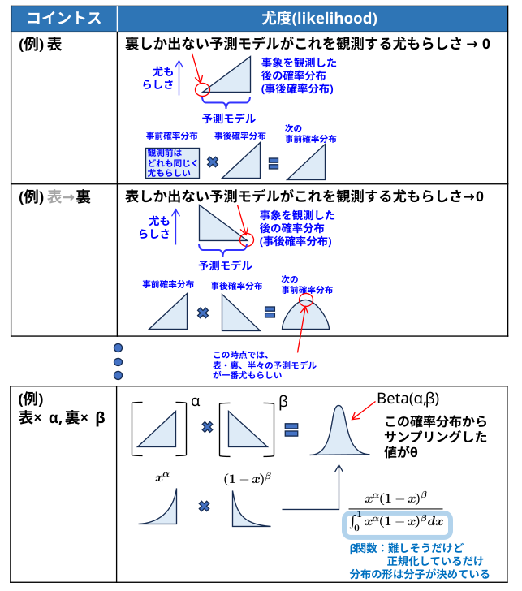
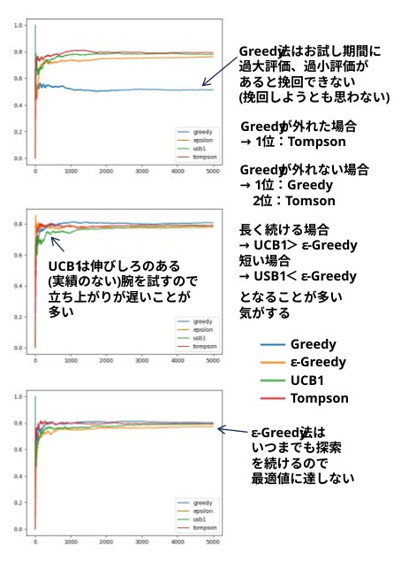

多腕バンディット問題（Multi-Armed Bandit Problem）とは、確率論や機械学習（強化学習）における古典的な問題の一つで、「限られた試行回数の中で、不確実な複数の選択肢からどのように選べば、得られる報酬（利益）を最大化できるか」を探求する意思決定問題です。
名前の由来はカジノのスロットマシン（俗称：片腕の盗賊＝One-Armed Bandit）です。「当たり確率がそれぞれ異なる複数のスロットマシン（多腕）を前にしたギャンブラーが、限られた手持ちのコインで最大の利益を得るには、どの台をどの順番で何回引けばよいか」という状況を例にしていることからこの名が付きました。
この問題の本質は、「探索（Exploration）」と「活用（Exploitation）」のバランス（ジレンマ）にあります。
活用（Exploitation）
これまでに試した中で「一番当たりやすそう」と分かっている実績のある選択肢（アーム）を選び、確実に報酬を狙いに行く行動。
探索（Exploration）
まだデータが少なくて実力が分からない他の選択肢（アーム）をあえて試してみて、より優れた選択肢がないか情報を集めに行く行動。
(蛇足)
外れの無い「いつもの店」にするか、冒険をして「新たな店」を開拓するか
お試し期間に選んだ台を使い続ける一途な戦略。
お試し期間の選択が正しければ、一番効率的。
お試し期間に過大評価、過小評価があっても挽回できない(挽回しようと思わない)
一定の確率 \(\varepsilon \) でランダムに探索し、残りの確率 \(1-\varepsilon\) で現時点で最も報酬の高い腕を活用する最もシンプルな手法
(蛇足)
一定の頻度でランダムに浮気し続けるので、最後まで最適値に近づかない・・・
時間（試行回数）の経過とともに \(\varepsilon \) を小さくし、後半は活用に集中させる手法。
各腕の過去の報酬期待値に応じて、確率分布（Softmax関数）を用いて腕を選択する手法。期待値が高い腕ほど選ばれやすくなります。
\[ \text{腕 }i\text{ を選ぶ確率}=\frac{\exp\Big(\frac{\text{腕 }i\text{ の平均報酬}}{τ}\Big)}{\sum_{j=1}^K \exp\Big(\frac{\text{腕 }j\text{ の平均報酬}}{τ}\Big)} \quad τ\text{ は温度パラメータ} \]
「不確実なものほど楽観的に評価する（Optimism in the Face of Uncertainty）」という哲学に基づいた、理論的保証（リグレットの上界）を持つ強力な系譜です。
過去の報酬期待値に「不確実さ（ばらつきや試行回数の少なさ）」を足し合わせたスコア（信頼上限）を計算し、それが最大となる腕を選ぶ手法。
\[
\text{腕}_{\text{次回}}=\mathrm{arg}\max\limits_{i}\Bigg(\underbrace{\text{腕 }i\text{ の平均報酬}}_{\text{実績(活用)}}+(\text{最高報酬}-\text{最低報酬})×\underbrace{\sqrt{\frac{2×\ln(\text{これまでの総プレイ回数})}{\text{これまで腕 }i\text{ をプレイした回数}}}}_{\text{伸びしろのある腕を試す(探索)}}\;\Bigg)
\]
・ 平均報酬が同じ腕なら、実績の少ない(伸びしろがあるかもしれない)腕を選ぶ。
・ 報酬の最高と最低の差により、活用重視と探索重視の比率を調整している。
(蛇足)
・伸びしろに期待して実績のない腕を試すので、最適値に近づくのに時間が掛かる。
腕の特徴量（コンテキスト）を考慮できるコンテキスト添え付きバンディット (Contextual Bandit) へ拡張したもの。Web広告のパーソナライズなどに広く使われています。
報酬の分布がベルヌーイ分布などの場合に、よりタイトな信頼区間（カルバック・ライブラー情報量）を用いて効率化。
報酬の確率分布をベイズ的に予測・更新していく系譜です。近年、実務（A/Bテストの自動化や推薦システム）で非常に高い成果を上げており主流の一つとなっています。
各腕の報酬分布を事後分布として推定し、その分布からランダムにサンプリングした値が最大の腕を選択する手法。
1. 各腕の報酬確率をサンプリングする。
各腕 \(i\) について、現在の「成功回数 \(\alpha _{i}\)」と「失敗回数 \(\beta _{i}\)」をパラメータに持つ ベータ分布（Beta分布） から、予測値 \(\theta _{i}\) をランダムに1つ抽出します。
\[
\theta_i \sim Beta\big(\alpha_i, \beta_i\big) \quad \text{for }i=1,2,...,K
\]
(蛇足)
・ 難しそうに見えるが、報酬を0/1 とすると、コイントスの尤度と同じ。
尤度： 横軸･･･モデル(裏しか出ないモデル･･･裏表50%のモデル･･･表しか出ないモデル)
縦軸･･･モデルの尤もらしさ

2. サンプリング値が最大の腕を選択する
抽出した予測値 \(\theta_i(t)\) が最も大きかった腕 \(A_{t}\) を選択（プレイ）します。
長い冬眠の後、大復活したアルゴリズム
●『On the likelihood that one unknown probability exceeds another in view of the evidence of two samples』 (1933)
臨床試験（治験）において患者へ効果的な治療法をいかに割り当てるかという問題（2アームのバンディット問題）を解くために提案されましたが、長らく注目されませんでした
●『An Empirical Evaluation of Thompson Sampling』 (2011)
Web広告の配信や推薦システムなどの大規模な実データを用いてベンチマークを行い、トンプソンサンプリングが当時の最先端（State-of-the-Art）アルゴリズムを圧倒する性能を持つことを実証しました。この論文が呼び水となり、「なぜこんなに強いのか」を数学的に証明する理論研究の競争が始まりました。
●『Analysis of Thompson Sampling for the Multi-armed Bandit Problem』 (2012)
「実験的に強い」という事実に対し、初めて理論的な最悪ケースの保証（リグレット解析）を証明した記念碑的な論文です。
報酬がベルヌーイ分布に従う標準的なマルチアームバンディット問題において、トンプソンサンプリングのリグレット（損失）が時間の対数オーダー（\(O(\ln T)\)）で抑えられることを初めて理論的に証明しました。
●『Further Optimal Regret Bounds for Thompson Sampling』 (2012)
ほぼ同時期に、トンプソンサンプリングが理論上「これ以上良くならない」という限界（Lai-Robbinsの理論限界）に完全に到達していることを証明した論文です。
トンプソンサンプリングが、情報理論的なリグレットの下限値（理論上のベストスコア）に漸近的に一致すること（漸近最適性）を証明。これにより、「実用面でも理論面でも最強のアルゴリズムの一つ」としての地位が不動のものとなりました。
これら「2011〜2012年の3つの論文」が揃ったことで、1933年の古い手法だったトンプソンサンプリングは、現代のAI・機械学習における大本命アルゴリズムへと生まれ変わりました。
トンプソンサンプリングをコンテキスト添え付きバンディット（線形モデル）に応用したもの。
これまでの手法が「報酬の確率分布が一定（静的）」であることを前提としているのに対し、環境が時間の経過やプレイヤーの行動に応じて悪意を持って変化する（敵対的環境）ことを想定した系譜です。
報酬の確率分布を仮定せず、過去の重みに基づいて確率的に腕を選択し、得られた報酬の逆確率で重みを指数関数的に更新する手法。
複数の「エキスパート（助言者）」の意見を統合してコンテキストに対応させる手法。
(data/task_multi_armed_bandit_problem/src/sim_epsilon_ucb_thompson.py)
